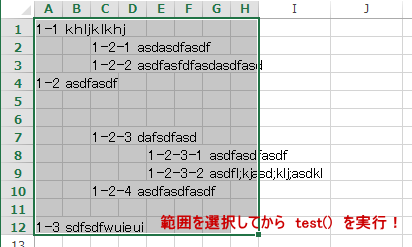

▼リボンを非表示にするコード
Application.ExecuteExcel4Macro "SHOW.TOOLBAR(""Ribbon"",False)"
上記のコードを実行するとリボンが非表示になります。
逆にリボンを表示するときは、以下のコードを実行してください。
▼リボンを表示するコード
Application.ExecuteExcel4Macro "SHOW.TOOLBAR(""Ribbon"",True)"
■リボンをカスタマイズするXML
'ZIP解凍したxlsm の中にcustomUIフォルダを作成してcustomUI.xmlをutf-8 で作成。
_rels/.rels ファイルを以下手順で編集し、再ZIPして拡張子をxlsmに戻してやれば完成
customUI.xml 2007用
-------------
<?xml version="1.0" encoding="utf-8"?>
<customUI xmlns="http://schemas.microsoft.com/office/2006/01/customui">
<ribbon startFromScratch="false">
<tabs>
<tab id="tab2007" label="Tab 2007">
<group id="grp2007" label="Group 2007">
<button id="btn2007" label="Button 2007" imageMso="HappyFace" size="large" onAction="Macro2007" />
</group>
</tab>
</tabs>
</ribbon>
</customUI>
customUI14.xml 2010～用
-------------
<?xml version="1.0" encoding="utf-8"?>
<customUI xmlns="http://schemas.microsoft.com/office/2009/07/customui">
<ribbon startFromScratch="false">
<tabs>
<tab id="tab2010" label="Tab 2010">
<group id="grp2010" label="Group 2010">
<button id="btn2010" label="Button 2010" imageMso="SadFace" size="large" onAction="Macro2010" />
</group>
</tab>
</tabs>
</ribbon>
</customUI>
用意するコールバック関数'Thisworkbookモジュールに書いて
onAction="Macro2010" 部分を onAction="Thisworkbook.Macro2010" と書いてやると
Private で宣言できる。
Public Sub Macro2007(control As IRibbonControl)
MsgBox "Hello! 2007!!", vbExclamation
End Sub
Public Sub Macro2010(control As IRibbonControl)
MsgBox "Hello! 2010!!", vbCritical
End Sub
「_rels」フォルダにある「.rels」ファイル
</Relationships>」の前に下記のコードを貼り付け、上書き保存します。
<Relationship Id="myCustomUI" Type="http://schemas.microsoft.com/office/2006/relationships/ui/extensibility" Target="/customUI/customUI.xml" />
◆貼り付けを値貼り付けに強制する
'↓いい線いっているんだけど、EnterKeyでも貼り付けできちゃうので
不完全。むずかしいや。⇒こんな事をしなくても、シートに保護をかければ値貼り付けにはなる。
ただし、入力規則のチェックは利かないのが残念なところ。一セルずつChangeイベントで値をチェックしないと
完璧ではない。
Option Explicit
'Thisworkbookモジュール
'このサンプルはSheet1の入力規則セルへのコピペを
'値貼り付け以外禁止し、値貼り付けも入力規則にあわない物は
'制限します。
''いい感じに出来たとおもったんだけど、Enterキーでも
''貼り付けできちゃうのでボツにしたコード
Private WithEvents BtnPasteSpecial As Office.CommandBarButton
Private WithEvents BtnPasteAll As Office.CommandBarButton
Sub ignition()
'形式を選択して貼り付け
Set BtnPasteSpecial = Application.CommandBars.FindControl(, 755)
'貼り付け
Set BtnPasteAll = Application.CommandBars.FindControl(, 22)
End Sub
Private Sub LetPasteValue(Optional NotSendV As Boolean, Optional CancelDefault As Boolean)
'Microsoft Forms2.0 object Library参照設定要
'ActiveXコントロールが挿入されているブックであれば
'この参照設定は自動で入る。
Dim myData As New DataObject
Dim cpytxt As String
Dim aryStr As Variant
Dim flgOK As Boolean
Dim i As Long
Const textFormat As Long = 1
On Error GoTo err_handle
If ActiveWorkbook Is ThisWorkbook Then
If _
ActiveSheet Is Sheet1 Then
'入力規則がある場合
If HasValidation(ActiveCell) Then
myData.GetFromClipboard
cpytxt = myData.GetText(textFormat)
cpytxt = Replace(cpytxt, vbTab, vbNullString)
cpytxt = Replace(cpytxt, vbCr, vbNullString)
cpytxt = Replace(cpytxt, vbLf, vbNullString)
With ActiveCell.Validation
aryStr = .Formula1
aryStr = Split(aryStr, ",")
End With
For i = 0 To UBound(aryStr)
If cpytxt = aryStr(i) Then
flgOK = True
Exit For
End If
Next
If flgOK = False Then
Err.Raise _
1 + vbObjectError, "LetPasteValue", _
"このセルには " & Join(aryStr, " , ") & " のみ貼り付けできます"
End If
End If
ActiveCell.PasteSpecial xlPasteValues
CancelDefault = True
Else
'Ctrl+V の場合
If NotSendV = False Then
ActiveCell.PasteSpecial
End If
End If
End If
end_handle:
Exit Sub
err_handle:
MsgBox Err.Description, vbExclamation, ThisWorkbook.Name
Resume end_handle
End Sub
'セルが入力規則を持っていればTrue
Private Function HasValidation(rng As Range) As Boolean
Dim v
On Error Resume Next
v = rng.Validation.Formula1
If Err.Number = 0 Then
HasValidation = True
End If
On Error GoTo 0
End Function
Private Sub BtnPasteSpecial_Click(ByVal Ctrl As Office.CommandBarButton, CancelDefault As Boolean)
Call LetPasteValue(True, CancelDefault)
End Sub
Private Sub BtnPasteAll_Click(ByVal Ctrl As Office.CommandBarButton, CancelDefault As Boolean)
Call LetPasteValue(True, CancelDefault)
End Sub
Private Sub Workbook_BeforeClose(Cancel As Boolean)
Application.ExecuteExcel4Macro "SHOW.TOOLBAR(""Ribbon"",True)"
'カスタムキーの復帰
Application.OnKey "^v"
Application.OnKey "^{down}"
End Sub
Private Sub Workbook_Open()
Call ignition
End Sub
Private Sub SelectValidation()
Dim aryStr As Variant
Dim ary As Variant
Static i As Long
'入力規則がある場合
If HasValidation(ActiveCell) Then
With ActiveCell.Validation
aryStr = .Formula1
ary = Split(aryStr, ",")
End With
ActiveCell.Value = ary(i Mod (UBound(ary) + 1))
i = i + 1
Else
ActiveCell.End(xlDown).Select
End If
End Sub
Private Sub Workbook_SheetActivate(ByVal Sh As Object)
If Sh Is Sheet1 Then
Application.ExecuteExcel4Macro "SHOW.TOOLBAR(""Ribbon"",False)"
Application.OnKey "^v", Me.CodeName & ".LetPasteValue"
Application.OnKey "^{down}", Me.CodeName & ".SelectValidation"
Else
Application.ExecuteExcel4Macro "SHOW.TOOLBAR(""Ribbon"",True)"
'カスタムキーの復帰
Application.OnKey "^v"
Application.OnKey "^{down}"
End If
End Sub
'■クリップボードを空にする
Sub 処理()
Sheet2.Copy Sheet1
'↓これ入れておくと閉じる時「保存しますか？」とは訊いてきても
'クリップボードに大きな情報があります。どーしますか？とは訊かれないで済む
Application.CutCopyMode = False
End Sub
'■ユーザー定義関数 カンマ区切りの文字列長不定で先頭が "0" で始まるかもしれない
'数字文字列を 数字として並び替えて表示する
'sample =csvSort("05"&",09, 003, 00200, 0001,111",TRUE) ⇒ 01, 03, 005, 00009, 0111, 200
'桁が一緒に並び変わらないのでダメだこれは… むずかしい
'文字列長不定の"0"から始まる事もある数字文字列を数字としてソートして返します。
Function csvSort(csv As String, Optional asc As Boolean = True) As String
Dim ary As Variant
Dim cl As Collection
ary = Split(csv, ",")
Set cl = cnvLng(ary)
Dim i As Long
For i = 0 To cl.Count - 1
ary(i) = Format$(cl.Item(i + 1)(0), String(15, "0"))
Next
Call ArySort(ary, LBound(ary), UBound(ary), asc)
Dim rslt As String
For i = LBound(ary) To UBound(ary)
rslt = rslt & ", " & Format$(CLng(ary(i)), String(cl.Item(i + 1)(1), "0"))
Next
csvSort = Right$(rslt, Len(rslt) - 2)
End Function
Private Function cnvLng(ary As Variant) As Collection
Dim i As Long
Dim trimAry As String
Dim cl As New Collection
For i = LBound(ary) To UBound(ary)
trimAry = Trim(ary(i))
cl.Add Array(CLng(trimAry), Len(trimAry))
Next
Set cnvLng = cl
End Function
'■ファイルが開いているか否かを判定する
Option Explicit
'ブックが開いているか開いていないかのチェック
Function IsWbOpen(WbfullPth As String) As Boolean
'ファイルが存在しない場合はエラー
'うっかりAppendモードでOpenすると
'新規ファイルが作成されてしまう。
If CreateObject("Scripting.FileSystemObject"). _
FileExists(WbfullPth) = False Then
Err.Raise 514, , WbfullPth & " は存在しません"
End If
'追加モードでファイルを開く
'ブックとして開いてReadOnlyプロパティを
'確認するよりも高速に判断できる
On Error Resume Next
Open WbfullPth For Append As #1
Close #1
If Err.Number Then
IsWbOpen = True
Else
IsWbOpen = False
End If
End Function
'■'全テキストカナ表示に変換。漢字があればヨミに変換します
'range("a1") が "カタカナ漢字ひらがな" なら "ｶﾀｶﾅｶﾝｼﾞﾋﾗｶﾞﾅ" と変換できます
Function cnvStrKanaAll(rng As Range, mode As VbStrConv) As String
If Len(rng.Value) = 0 Then
cnvStrKanaAll = vbNullString
Else
rng.SetPhonetic
Dim v As Phonetics
Dim y As Phonetics
Dim s As String
Dim i As Long
Dim yomicl As New Collection
Dim ymCnt As Long
Set v = rng.Phonetics
For Each y In v
yomicl.Add Array(y.Text, y.Length)
Next
For i = 1 To Len(rng.Text)
'"亜"はShiftJisでの漢字の最小
'"亜"より小さいcodeの文字を「記号」とみなす
If Hex(Asc(Mid$(rng.Text, i, 1))) < Hex(Asc("亜")) Then
s = s & Mid$(rng.Text, i, 1)
Else
ymCnt = ymCnt + 1
s = s & yomicl.Item(ymCnt)(0)
i = i + yomicl.Item(ymCnt)(1) - 1
End If
Next
cnvStrKanaAll = StrConv(s, mode)
End If
End Function
'■文字コードに関するあれこれ
Option Explicit
'文字コードの列挙体
Public Enum chrCodes
unicode = 1
shift_jis = 2
jis = 3
End Enum
'進数の列挙体
Enum shinSuu
e_binary = 2
e_oct = 8
e_hex = 16
End Enum
Private m_2shin As String '"(2進)"
Private m_8shin As String 'Chr(38) & "0"
Private m_16shin As String 'Chr(38) & "H"
'Microsfot VBScript Regular ExpressionsX.X 要参照設定
Private instReg As VBScript_RegExp_55.RegExp
'ユーザー定義関数、数式パレット上の説明
Public Sub SetHelpDescription()
'GetCodeFromChar
Application.MacroOptions _
macro:="GetCodeFromChar", _
Category:="文字コード・進数変換", _
Description:= _
"指定文字コードでGlyph（文字）に対応する１０進数を返します。" & vbNewLine & _
"第２引数には、Unicode:1, Shift_Jis:2, Jis:3 を指定して下さい"
'GetCharFromCode
Application.MacroOptions _
macro:="GetCharFromCode", _
Category:="文字コード・進数変換", _
Description:= _
"１０進数値を指定文字コードでGlyphを返します。" & _
"１６進数にはプリフィックス &H を付けて指定します。" & vbNewLine & _
"第２引数には、unicode:1, shift_JIS:2, jis:3 の何れかを指定します。"
'GetAdicNumber
Application.MacroOptions _
macro:="GetAdicNumber", _
Category:="文字コード・進数変換", _
Description:= _
"１０進数を渡して２,８,１６進数を返します。" & _
"第２引数に、2, 8, 16 の何れかを指定します" & _
"戻り値は３２ビットの正の整数表現になります。" & vbNewLine & _
"例：GetAdicNumber(-1, 16) ⇒ '&HFFFFFFFF'"
'GetDecNumFromAdic
Application.MacroOptions _
macro:="GetDecNumFromAdic", _
Category:="文字コード・進数変換", _
Description:= _
"２,８,１６進数をを渡してLong型の１０進数を返します。" & vbNewLine & _
"第２引数に、2, 8, 16 の何れかを指定します" & _
"第１引数にはセルの番地で指定するか文字列を渡して下さい" & vbNewLine & _
"例：GetDecNumFromAdic(""FFFFFFFF"", 16) ⇒ -1"
'IsGaiji
Application.MacroOptions _
macro:="IsGaiji", _
Category:="文字コード・進数変換", _
Description:= _
"文字を渡し、外字であれば TRUE を返します。" & vbNewLine & _
"Shift_JIS以外の文字であれば 'NotShift_JIS' を返します。"
m_2shin = "(2進)"
m_8shin = "&0"
m_16shin = "&H"
End Sub
'１０進数値を指定文字コードでGlyphを返します。
'１６進数にはプリフィックス &H を付けて指定します。
'第２引数には、unicode:1, shift_JIS:2, jis:3 の何れかを指定します。
Function GetCharFromCode(ByRef decNum As Long, ByRef code As chrCodes) As String
Select Case code
Case unicode
GetCharFromCode = VBA.ChrW(decNum)
Case shift_jis
GetCharFromCode = VBA.Chr(decNum)
Case jis
GetCharFromCode = Evaluate("char(" & decNum & ")")
Case Else
'何もしない
End Select
End Function
'指定文字コードでGlyphに対応する１０進数を返します。
'第２引数には、Unicode:1, Shift_Jis:2, Jis:3 を指定して下さい
Function GetCodeFromChar(ByRef myChr As String, ByRef code As chrCodes) As Long
Select Case code
Case unicode
GetCodeFromChar = VBA.AscW(myChr)
Case shift_jis
GetCodeFromChar = VBA.Asc(myChr)
Case jis
GetCodeFromChar = Evaluate("code(""" & myChr & """)")
Case Else
'何もしない
End Select
End Function
'１０進数を渡して２,８,１６進数を返します。
'第２引数に、2, 8, 16 の何れかを指定します
Function GetAdicNumber(ByRef decNum As Long, ByRef num_adic As shinSuu) As String
Dim strNum As String
Dim str1Keta As String
Dim strBinNum As String
Dim preFix As String
Dim i As Long
'ひとまず１６進に変換
strNum = Hex(decNum)
Select Case num_adic
Case e_binary
preFix = m_2shin
strBinNum = ""
For i = 1 To Len(strNum)
str1Keta = Mid$(strNum, i, 1)
Select Case str1Keta
Case "0"
strBinNum = strBinNum & "0000"
Case "1"
strBinNum = strBinNum & "0001"
Case "2"
strBinNum = strBinNum & "0010"
Case "3"
strBinNum = strBinNum & "0011"
Case "4"
strBinNum = strBinNum & "0100"
Case "5"
strBinNum = strBinNum & "0101"
Case "6"
strBinNum = strBinNum & "0110"
Case "7"
strBinNum = strBinNum & "0111"
Case "8"
strBinNum = strBinNum & "1000"
Case "9"
strBinNum = strBinNum & "1001"
Case "A"
strBinNum = strBinNum & "1010"
Case "B"
strBinNum = strBinNum & "1011"
Case "C"
strBinNum = strBinNum & "1100"
Case "D"
strBinNum = strBinNum & "1101"
Case "E"
strBinNum = strBinNum & "1110"
Case "F"
strBinNum = strBinNum & "1111"
End Select
Next
'先頭の 0 を除去
Do While Left$(strBinNum, 1) = 0
strBinNum = Right$(strBinNum, Len(strBinNum) - 1)
If Len(strBinNum) = 1 Then Exit Do
Loop
strNum = strBinNum
Case e_oct
preFix = m_8shin
strNum = Oct("&H" & strNum)
Case e_hex
preFix = m_16shin
'そのまんま
Case Else
Err.Raise 513, , "GetAdicNumber の第２引数には" & _
shinSuu.e_binary & ", " & shinSuu.e_oct & ", " & shinSuu.e_hex & _
" の何れかを指定します"
Exit Function
End Select
GetAdicNumber = preFix & strNum
End Function
'２,８,１６進数をを渡して１０進数を返します。
'第２引数に、2, 8, 16 の何れかを指定します
Function GetDecNumFromAdic(ByRef adicNum As String, ByRef mode As shinSuu) As Long
Dim rsltNum As Long
Dim minusFlg As Boolean
'途中 Like 演算子で引数のチェックをしているので
'a も Aと同じに扱われるように全て大文字にしておく
adicNum = VBA.StrConv(adicNum, vbUpperCase)
Set instReg = New VBScript_RegExp_55.RegExp
Select Case mode
Case e_binary
'引数チェック
Do While Left$(adicNum, 1) Like "[!0-1]"
adicNum = Right$(adicNum, Len(adicNum) - 1)
Loop
'先頭の 0 は除く
Do While Left$(adicNum, 1) = "0"
adicNum = Right$(adicNum, Len(adicNum) - 1)
Loop
With instReg
.Pattern = "[^0-1]"
.Global = True
.IgnoreCase = False
If .Test(adicNum) Then
Err.Raise 514, , _
"文字列の先頭部分以外に、" & _
"2進数にない値が含まれています"
End If
End With
If Len(adicNum) > 32 Then
Err.Raise 6 'オーバーフロー
End If
If Len(adicNum) = 0 Then
Err.Raise 515, , "8進数ではありません。"
End If
Dim i As Long
'マイナス判定
If Len(adicNum) = 32 And Left$(adicNum, 1) = "1" Then
minusFlg = True
adicNum = Right$(adicNum, Len(adicNum) - 1)
End If
For i = 1 To Len(adicNum)
'マイナスの最大値絶対値が１大きいので
'オーバーフローしないように符号をマイナスにしておく。
rsltNum = _
rsltNum - CLng(Mid$(adicNum, i, 1)) * (2 ^ (Len(adicNum) - i))
Next
'符号を戻す
If minusFlg Then
'既にマイナスに算出しているので符号の変更はないが、
'負数の場合 -1 する。
'同一ビット1111111 11111111 11111111 11111111(DF FF FF FF)でも
'正に解釈すると 0～2^32-1 になり、
'負に解釈すると-(1～2^32) であり調整が必要。
rsltNum = rsltNum - 1
Else
rsltNum = -rsltNum
End If
Case e_oct
'文字列の先頭部分から８進数以外を排除
Do While Left$(adicNum, 1) Like "[!0-7]"
adicNum = Right$(adicNum, Len(adicNum) - 1)
Loop
'引数チェック
With instReg
.Pattern = "[^0-7]"
.Global = True
.IgnoreCase = False
If .Test(adicNum) Then
Err.Raise 516, , "文字列の先頭部分以外に" & _
" 8 進数でない値があります。"
End If
End With
If Len(adicNum) = 0 Then
Err.Raise 517, , "8進数ではありません。"
End If
rsltNum = "&0" & adicNum
Case e_hex
'文字列先頭部分に１６進の数字以外の値があれば排除
Do While Left$(adicNum, 1) Like "[!0-9, !A-F]"
adicNum = Right$(adicNum, Len(adicNum) - 1)
Loop
'引数チェック
With instReg
.Pattern = "[^0-9, ^A-F]"
.Global = True
.IgnoreCase = False
If .Test(adicNum) Then
Err.Raise 516, , "文字列先頭部分以外に" & _
" 16進数でない値があります。"
End If
End With
If Len(adicNum) > 8 Then
Err.Raise 6 'オーバーフロー
End If
If Len(adicNum) = 0 Then
Err.Raise 517, , "16進数ではありません。"
End If
rsltNum = "&h" & adicNum
End Select
GetDecNumFromAdic = rsltNum
End Function
'文字を渡し、外字であれば TRUE を返す
'Windowsのユーザー外字領域（Shift_JIS）
'0xF040(61504)-0xF9FC(63996)
'文字を渡し、Shift_JIS以外の文字であれば"NotShift_JIS"を返す
Function IsGaiji(myChar As String) As Variant
Dim ret As Long
Const Maxcode As Long = 63996
Const mincode As Long = 61504
ret = Asc(myChar)
'Shift_JISに無い文字はchr(63):"?"が返る
If ret = 63 Then
If myChar <> "?" Then
IsGaiji = "NotShift_JIS"
End If
Exit Function
End If
If ret >= mincode And ret <= Maxcode Then
IsGaiji = True
Else
IsGaiji = False
End If
End Function
'/文字コードに関するあれこれ
'■参照設定する
Sub 参照設定を調べる()
'これでGUIIDが判るので
'[Microsoft Visual Basic for Applications Extensibility] に参照設定
Dim ref As Reference
For Each ref In ThisWorkbook.VBProject.References
With ref
Debug.Print _
.Name & vbCrLf & _
.Description & vbCrLf & _
.FullPath & vbCrLf & _
.guid & vbCrLf & _
TypeName(ref) & vbCrLf & _
"----"
End With
Next ref
'Excel
'Microsoft Excel 12.0 Object Library
'C:\Program Files (x86)\Microsoft Office\Office12\EXCEL.EXE
'{00020813-0000-0000-C000-000000000046}
'Reference
'----
'stdole
'OLE Automation
'C:\Windows\SysWOW64\stdole2.tlb
'{00020430-0000-0000-C000-000000000046}
'Reference
'----
'Office
'Microsoft Office 12.0 Object Library
'C:\Program Files (x86)\Common Files\Microsoft Shared\OFFICE12\MSO.DLL
'{2DF8D04C-5BFA-101B-BDE5-00AA0044DE52}
'Reference
'----
'Scripting
'Microsoft Scripting Runtime
'C:\Windows\SysWOW64\scrrun.dll
'{420B2830-E718-11CF-893D-00A0C9054228}
'Reference
'----
'VBIDE
'Microsoft Visual Basic for Applications Extensibility 5.3
'C:\Program Files (x86)\Common Files\Microsoft Shared\VBA\VBA6\VBE6EXT.OLB
'{0002E157-0000-0000-C000-000000000046}
'Reference
'----
End Sub
'参照設定を追加するマクロ
Sub AddReference()
'これでScriptingRuntimeに参照設定が入る
Const cnScritingRunTime As String = "{420B2830-E718-11CF-893D-00A0C9054228}"
ThisWorkbook.VBProject.References.AddFromGuid cnScritingRunTime, 1, 0
End Sub
'■ワークシート上のActiveXオブジェクトのプロパティ操作
Sub コンボボックスのプロパティテスト()
Dim cmb As MSForms.ComboBox
Dim ole As OLEObject
For Each ole In OLEObjects
Set cmb = ole.Object
cmb.Style = fmStyleDropDownList
cmb.List = Array("1", "2", "3")
cmb.Enabled = True
Next
For Each ole In OLEObjects
Set cmb = ole.Object
cmb.Locked = True
'あれ？利くぞ？？？ｘｌ２００７
Next
End Sub
Sub テキストボックスのプロパティテスト()
Dim txb As MSForms.TextBox
Dim ole As OLEObject
For Each ole In OLEObjects
Set txb = ole.Object
txb.Enabled = True
Next
For Each ole In OLEObjects
Set txb = ole.Object
txb.Locked = True
'ああああああああああああああああああ利く＠ｘｌ２００７
Ne
End Sub
'大量のワークシート作成でリソース不足に陥れないアイディア
'シートのカウント管理とカウントを監視して５０シート超え
'イベントを検知するイベントを作って対処すれば、混乱せずに
'コーディングできる。。。という作戦
Sub test()
Dim i As Long, j As Long
Dim shNameAry(29) As Worksheet
For i = 1 To 400
Sheet1.Copy after:=Sheet1
'５０シート超えたら３０シートずつ別ブックに保存させて
'リソース不足を凌ぐ作戦
If ThisWorkbook.Sheets.Count > 50 Then
For i = LBound(shNameAry) To UBound(shNameAry)
shNameAry(i) = ThisWorkbook.Worksheets(i).Name
Next
'新規ブックに移動
ThisWorkbook.Worksheets(shNameAry).Copy
'With ActiveWorkbook
' .SaveAs EnebleWbPath
' .Close
'End With
'Application.DisplayAlerts=False
'ThisWorkbook.Worksheets(shNameAry).delete
'Application.DisplayAlerts = True
End If
Next
End Sub
Sub 画像を挿入して縦横比を解除してサイズ指定()
'Picture.Insertは非表示のメンバ
'Sub InsPict()推奨（たぶん）
Dim pic As Picture
Set pic = Sheet1.Pictures.Insert(ThisWorkbook.Path & "\hoge.png")
With pic
'縦横比の固定解除
.ShapeRange.LockAspectRatio = msoFalse
.Width = 700
.Height = 400
.Top = 0
.Left = 0
End With
End Sub
Sub InsPict()
Dim objFileName As String
Dim objShape As Shape
objFileName = Application.GetOpenFilename _
("Pictures (*.gif; *.jpg; *.bmp; *.tif),*.gif; *.jpg; *.bmp; *.tif", , "画像選択ダイアログ")
'アクティブセルの位置に図の幅と高さを Double型 50 ポイントに指定して画像を挿入します
'
Set objShape = ActiveSheet.Shapes.AddPicture( _
fileName:=objFileName, _
LinkToFile:=False, _
SaveWithDocument:=True, _
Left:=Selection.Left, _
Top:=Selection.Top, _
Width:=50#, _
Height:=50#)
'図のサイズを元のサイズに戻します
'!1はSingleで元のサイズに対する倍率を指定している
With objShape
.ScaleHeight 1!, msoTrue
.ScaleWidth 1!, msoTrue
End With
End Sub
Sub 別ブックのプロシージャ呼び出し()
Application.Run "Book2!Test2"
End Sub
'（2005年5月くらいのwww2.moug.net過去ログ情報から）
'印刷設定の倍率を取得
Sub try()
'自動設定{横:1,縦:無指定}
ExecuteExcel4Macro "Page.Setup(,,,,,,,,,,,,{1,#N/A})"
'zoom設定{横:無指定,縦:無指定}
ExecuteExcel4Macro "Page.Setup(,,,,,,,,,,,,{#N/A,#N/A})"
'zoom取得
MsgBox ExecuteExcel4Macro("Get.Document(62)")
End Sub
VBで変数のアドレスを取得する
VarPtr - 変数のアドレスを返します。
VarPtrArray - 配列のアドレスを返します。(excelVBA不可)
StrPtr - UNICODE の文字列バッファーのアドレスを返します。
VarPtrStringArray - 文字列の配列のアドレスを返します。(excelVBA不可)
ObjPtr - オブジェクトによって参照されるインターフェイスには、ポインターを返します変数です。
'■見えない「名前定義」の修復
Public Sub VisibleNames()
Dim Name As Name
For Each Name In Excel.Names
If Name.Visible = False Then
Name.Visible = True
End If
Next
MsgBox "すべての名前の定義を表示しました。", vbOKOnly
End Sub
Public Sub inVisibleNames()
Dim Name As Name
For Each Name In Excel.Names
If Name.Visible Then
Name.Visible = False
End If
Next
MsgBox "すべての名前の定義を非表示しました。", vbOKOnly
End Sub
'■複数セルの選択
Function usedcells() As Variant
usedcells = _
Array("B3", "B5", "B7", "B9", "B11", "B13", "B15", "B17", "B19", "B21", "B23", _
"B25", "B27", "B29", "B31", "B33", "B35", "B37", "B39", "B41", "H3", "H5", "H7", _
"H9", "H11", "H13", "H15", "H17", "H19", "H21", "H23", "H25", "H27", "H29", "H31", _
"H33", "H35", "H37", "H39", "H41", "N3", "N5", "N7", "N9", "N11", "N13", "N15", _
"N17", "N19", "N21", "N23", "N25", "N27", "N29", "N31", "N33", "N35", "N37", "N39", "N41")
End Function
Sub usedCellsSelect()
Dim i As Long
Dim rng As Range
Dim vAry As Variant
vAry = usedcells
Set rng = Range(vAry(LBound(vAry)))
For i = LBound(vAry) + 1 To UBound(vAry)
Set rng = Union(rng, Range(vAry(i)))
Next
Me.Activate
rng.Select
End Sub
'■指定した文字列キーの登場数とキーのLong値の合計を返すクラス
Option Explicit
'clsCollectionCountSum クラスモジュール
Private mclctn As Collection
Private Sub Class_Initialize()
Set mclctn = New Collection
End Sub
Public Sub Add(Value As Long, key As String)
Dim Item As Collection
Dim o As Object
On Error Resume Next
Set o = mclctn(key)
'引数が不正です：5
If Err.Number = 5 Then
Set Item = New Collection
On Error GoTo 0
End If
On Error Resume Next
mclctn.Add Item, key
'キー重複エラーのトラップ
If Err.Number = 457 Then
mclctn(key).Add Value
On Error GoTo 0
Else
Item.Add Value
End If
End Sub
Public Property Get CountIf(key As String) As Long
CountIf = mclctn(key).Count
End Property
Public Property Get SumTotal(key As String) As Long
Dim v As Variant
Dim lng As Long
For Each v In mclctn(key)
lng = lng + CLng(v)
Next
SumTotal = lng
End Property
Sub test()
Dim obj As New clsCollectionCountSum
obj.Add 1, "masao"
obj.Add 2, "masao"
obj.Add 2, "yumiko"
Debug.Print "masao", obj.CountIf("masao") & " 回登場", "合計は " & obj.SumTotal("masao")
Debug.Print "yumiko", obj.CountIf("yumiko") & " 回登場", "合計は " & obj.SumTotal("yumiko")
' masao 2 回登場 合計は 3
' yumiko 1 回登場 合計は 2
End Sub
Option Explicit
Private Function subGetFreeSpace(FolderName As String) As String()
Dim tmpPath As String
Dim sCmd As String
Dim ko As Long
Dim ff() As String
Dim fso As Object 'As New Scripting.FileSystemObject
Set fso = CreateObject("scripting.filesystemobject")
Dim ts As Object 'Scripting.TextStream
Dim tf As Object 'File
'作業用ファイル名
tmpPath = Environ$("Temp") & "\" & fso.GetTempName
Set ts = fso.CreateTextFile(Filename:=tmpPath, Unicode:=True)
ts.Close
Set tf = fso.GetFile(tmpPath)
'a:d ディレクトリ属性の表示
sCmd = "DIR """ & FolderName & """ /a:d >> """ & tmpPath & """"
Dim WSO As Object 'New WshShell
Set WSO = VBA.CreateObject("WScript.Shell")
'7:ウィンドウを最小化ウィンドウとして表示します。
'アクティブなウィンドウは切り替わりません。
Const cnsWinStyle As Integer = 7
With WSO
'第三引数は bWaitOnReturn
'実行終了まで次のステップに進むのを待つか否か
ko = .Run("CMD /U/C " & sCmd, cnsWinStyle, True)
End With
Dim io As Integer
Dim buf() As Byte
Dim flg As Boolean
io = FreeFile()
Open tmpPath For Binary As io
If LOF(io) > 0 Then
flg = True
'LOFで可変長文字列のバイト数を取得
'文字列データはバイト型の配列である
ReDim buf(1 To LOF(io))
'Getステートメントは第三引数のサイズ分のバイト数を読み込む
Get #io, , buf
End If
Close io
Kill tmpPath
'BOMの削除.1文字２バイト、バイト配列なので先頭2バイトを削除
Dim buf2() As Byte
Dim i As Long
ReDim buf2(1 To UBound(buf) - 2)
For i = 1 To UBound(buf2)
buf2(i) = buf(i + 2)
Next
If flg Then
ff() = Split(buf2, vbCrLf)
End If
subGetFreeSpace = ff()
End Function
'ドライブ名を割り当てずに空き容量を取得する
Function GetByteFreeSpace(FolderPath As String) As Double
Dim list() As String
list() = subGetFreeSpace(FolderPath)
Dim freeSpace As String
freeSpace = list(UBound(list) - 1)
freeSpace = Split(Replace(Trim$(freeSpace), String(2, ChrW(32)), "●"), "●")(1)
With CreateObject("VBScript.RegExp")
.Pattern = "\D"
.Global = True
freeSpace = .Replace(freeSpace, vbNullString)
End With
GetByteFreeSpace = CDbl(freeSpace)
End Function
Sub OnActionに引数を渡す()
Dim chkbx As Excel.CheckBox
Set chkbx = CheckBoxes.Add(1, 1, 1, 1)
Dim str As String
str = "'thisworkbook.gtest""" & chkbx.Name & """'"
Debug.Print str '⇒ 'thisworkbook.gtest"Check Box 10"'
chkbx.OnAction = str
''thisworkbook
'
'Sub gTest(str As String)
' MsgBox str
'End Sub
End Sub
Option Explicit
'閉じているブックに指定した名前のシートが含まれていればTRUE
Function IsExistWsNameInCloseBook( _
wbFullName As String, wsName As String) As Boolean
Dim v
For Each v In GetWsNames(wbFullName)
'Debug.Print v
If CStr(v) = wsName Then
IsExistWsNameInCloseBook = True
Exit For
End If
Next
End Function
'閉じているエクセルブックのシート名を取得
Function GetWsNames(wbFullName As String) As Collection
Const adSchemaTables As Long = 20
Dim adoCn As Object 'ADODB.Connection
Dim adoRs As Object 'ADODB.Recordset
Dim shName As String
Dim chk As String
Dim wsNames As New Collection
Set adoCn = CreateObject("ADODB.Connection")
adoCn.Open ("Provider=Microsoft.ACE.OLEDB.12.0;" & _
"Data Source=" & wbFullName & ";" & _
"Extended Properties=Excel 12.0;")
Set adoRs = adoCn.OpenSchema(adSchemaTables)
Do Until adoRs.EOF
If adoRs Is Nothing Then Exit Do
shName = adoRs.Fields("TABLE_NAME").Value
chk = Right$(shName, 1)
If chk = "$" Or chk = "'" Then
wsNames.Add Left$(shName, Len(shName) - 1)
End If
adoRs.MoveNext
Loop
adoRs.Close
Set adoRs = Nothing
adoCn.Close
Set adoCn = Nothing
Set GetWsNames = wsNames
End Function
Sub test()
Debug.Print IsExistWsNameInCloseBook("C:\Users\yama\Desktop\ブロクファイル\エラーのトラップをどこに仕掛けるか\xl.xlsm", "Index")
End Sub
Option Explicit
'方眼用紙エクセルに出会ってしまった時のツール
Private Type typHdrMem
hdrstr As Collection
lvl As Collection
rw As Collection
End Type
Private mHdrMem As typHdrMem
'選択範囲のセルを行方向単位で結合する
Sub mergeCell()
Dim rng As Range
Dim rw As Range
Set rng = Selection
For Each rw In rng.Rows
rw.Cells.Merge
Next
End Sub
'方眼用紙の階層見出し
Sub set番号階層見出し( _
rng As Range, jointChr As String, Optional preFix As String, _
Optional endChr As String)
Call delete見出し番号(rng, jointChr, endChr)
Dim clm As Range
Dim c As Range
Dim lvl As Long
Dim lvlCnt As Long
Dim hdr As String
Dim hdrPre As String
Dim hdrCnt As Long
With mHdrMem
Set .hdrstr = New Collection
Set .lvl = New Collection
Set .rw = New Collection
End With
Set rng = Selection
For Each clm In rng.Columns
If Application.CountA(clm) > 0 Then
lvl = lvl + 1
hdrCnt = 0
End If
For Each c In clm.Cells
If IsEmpty(c) = False Then
hdrCnt = hdrCnt + 1
If lvl < 2 Then
hdr = CStr(hdrCnt)
Else
hdr = getHdr(lvl - 1, c.Row)
If hdrPre <> hdr Then
hdrPre = hdr
hdrCnt = 1
End If
End If
If CBool(Len(preFix)) Then
If lvl = 1 Then
c.Value = preFix & jointChr & _
hdr & endChr & " " & c.Value
Else
c.Value = preFix & jointChr & _
hdr & jointChr & CStr(hdrCnt) & endChr & " " & c.Value
End If
Else
If lvl = 1 Then
c.Value = _
hdr & endChr & " " & c.Value
Else
c.Value = _
hdr & jointChr & CStr(hdrCnt) & endChr & " " & c.Value
End If
End If
End If
With mHdrMem
If lvl < 2 Then
.hdrstr.Add hdr
Else
.hdrstr.Add hdr & jointChr & CStr(hdrCnt)
End If
.rw.Add c.Row
.lvl.Add lvl
End With
Next
Next
End Sub
'行とlvlを指定してヘッダー文字を取り出す
Private Function getHdr(lvl As Long, rw As Long) As String
Dim str As String
Dim i As Long
With mHdrMem
For i = 1 To .rw.Count
If .rw(i) = rw And .lvl(i) = lvl Then
getHdr = CStr(.hdrstr(i))
Exit For
End If
Next
End With
End Function
Private Sub delete見出し番号( _
rng As Range, jointChr As String, Optional endChr As String)
Dim c As Range
Dim str As String
Dim ch As String
For Each c In rng.Cells
If IsEmpty(c.Value) = False Then
str = c.Value
ch = Left$(str, 1)
Do Until Not (ch = jointChr Or IsNumeric(ch) Or ch = endChr)
str = Right$(str, Len(str) - 1)
ch = Left$(str, 1)
Loop
c.Value = Trim$(str)
End If
Next
End Sub
Sub test()
Call set番号階層見出し(Selection, "-", "4", ".")
'Call set番号階層見出し(Selection, "-")
End Sub

'標準モジュール Option Explicit '方眼用紙エクセルに出会ってしまった時のツール2 Private Type typHdrMem hdrstr As Collection lvl As Collection rw As Collection End Type Public Enum enmMidashi maruSuji AlfUpper alfUnder End Enum Private mJointChr As String '1-1-① とか間を繋げる文字 Private mPreHeader As String '開始番号を指定する場合に指定"4"を指定すれば、 4-1-1 とかなる。 Private mEndChr As String '"."を指定すると、4-4-1. となる。 Private mEscapeChr As String Private mRng As Range Private mHdrMem As typHdrMem '選択範囲のセルを行方向単位で結合する Sub mergeCell() Dim rng As Range Dim rw As Range Set rng = Selection For Each rw In rng.Rows rw.Cells.Merge Next End Sub '方眼用紙の階層見出し Sub set番号階層見出し() Call delete見出し番号 Dim clm As Range Dim c As Range Dim lvl As Long Dim lvlCnt As Long Dim hdr As String Dim hdrPre As String Dim hdrCnt As Long With mHdrMem Set .hdrstr = New Collection Set .lvl = New Collection Set .rw = New Collection End With For Each clm In mRng.Columns If Application.CountA(clm) > 0 Then lvl = lvl + 1 hdrCnt = 0 End If For Each c In clm.Cells If IsEmpty(c) = False And Left$(c.Value, 1) <> mEscapeChr Then hdrCnt = hdrCnt + 1 If lvl = 1 Then hdr = CStr(hdrCnt) Else hdr = getHdr(lvl, c.Row) If hdrPre <> hdr Then hdrPre = hdr hdrCnt = 1 End If End If '3階層目以降は数字の変化球 If lvl > 2 Then Select Case lvl Case 3 '括弧囲み数字(1) hdr = "(" & hdrCnt & ")" Case 4 '丸囲み数字①～⑳の20個 hdr = cnvPttnDegit(hdrCnt, 20, maruSuji) Case 5 '大文字アルファベット26文字 hdr = cnvPttnDegit(hdrCnt, 26, AlfUpper) Case 6 '小文字アルファベット26文字 hdr = cnvPttnDegit(hdrCnt, 26, alfUnder) Case Else '定義がないので・ hdr = "・" End Select c.Value = _ hdr & IIf(hdr = "・", "", mEndChr) & " " & c.Value Else If lvl = 1 Then c.Value = IIf(CBool(Len(mPreHeader)), mPreHeader & mJointChr, "") & _ hdr & mEndChr & " " & c.Value Else c.Value = IIf(CBool(Len(mPreHeader)), mPreHeader & mJointChr, "") & _ hdr & mJointChr & CStr(hdrCnt) & IIf(hdr = "・", "", mEndChr) & " " & c.Value End If End If End If With mHdrMem .hdrstr.Add hdr .rw.Add c.Row .lvl.Add lvl End With Next Next End Sub '行とlvlを指定して指定レベル未満のヘッダー文字を繋げて返す Private Function getHdr(lvl As Long, rw As Long) As String Dim str As String Dim i As Long Dim lvldepth As Long With mHdrMem For lvldepth = 1 To lvl - 1 For i = 1 To .rw.Count If .rw(i) = rw And .lvl(i) = lvldepth Then If lvl = 2 Then str = CStr(.hdrstr(i)) Exit For Else str = str & CStr(.hdrstr(i)) End If End If Next Next End With getHdr = str End Function '数字を丸囲み数字で返すなどパターンの繰り返し文字を返す Function cnvPttnDegit(hdrCnt As Long, ItemMax As Long, mode As enmMidashi) As String Dim ketaval As Long Dim ketavals As New Collection Dim val As Long val = hdrCnt '開始位置の取得 Dim i As Long Dim kijun As Long 'ItemMax:0の無い進数、iは桁数を求めている。 '10を表現するには0の無い2進数で 222(2^2*2 + 2^1*2 + 2^0*2 = 11) 'で3桁必要。 i = 0 Do kijun = kijun + (ItemMax ^ i * ItemMax) If val <= kijun Then Exit Do End If i = i + 1 Loop '大きい位から値を取得する Do ketaval = val \ ItemMax ^ i '余りが一つ下の位の数より小さいと '一つしたの位が０になってしまう。 '０は使えないので、余りが一つしたの位の数 '未満の場合、商から１を引く（ただし１の位を除く） If i > 0 Then If _ val Mod ItemMax ^ i < _ ItemMax ^ (i - 1) Then ketaval = ketaval - 1 End If End If ketavals.Add ketaval val = val - ItemMax ^ i * ketaval i = i - 1 Loop Until i < 0 Dim v Dim str As String Dim flg As Boolean For Each v In ketavals If v > 0 Then flg = True If flg Then Select Case mode Case enmMidashi.maruSuji str = str & ChrW(AscW("①") + v - 1) Case enmMidashi.AlfUpper str = str & ChrW(AscW("A") + v - 1) Case enmMidashi.alfUnder str = str & ChrW(AscW("a") + v - 1) End Select End If Next cnvPttnDegit = str End Function Private Function IsTgtChr(ch As String) As Boolean If ch = mEscapeChr Or ch = vbNullString Then IsTgtChr = False Exit Function End If If _ ch = mJointChr Or _ IsNumeric(ch) Or _ ch = mEscapeChr Or _ ch = mEndChr Or _ ch = "(" Or ch = ")" Or _ (AscW(ch) >= AscW("①") And AscW(ch) <= AscW("⑳")) Or _ (AscW(ch) >= AscW("A") And AscW(ch) <= AscW("Z")) Or _ (AscW(ch) >= AscW("a") And AscW(ch) <= AscW("z")) _ Then IsTgtChr = True Else IsTgtChr = False End If End Function Private Sub delete見出し番号() Dim c As Range Dim str As String Dim ch As String For Each c In mRng.Cells If IsEmpty(c.Value) = False Then str = c.Value ch = Left$(str, 1) Do Until IsTgtChr(ch) = False str = Right$(str, Len(str) - 1) ch = Left$(str, 1) Loop c.Value = Trim$(str) End If Next End Sub Sub test() 'オプション mJointChr = "-" '1-1-① とか間を繋げる文字 mPreHeader = "" '開始番号を指定する場合に指定"4"を指定すれば、 4-1-1 とかなる。 mEndChr = "." '"."を指定すると、4-4-1. となる。 '次に指定する文字から始まる行は見出しを付けない '空白を指定しても無視される mEscapeChr = "_" Set mRng = Selection Call set番号階層見出し End Sub
yamaV1.02β